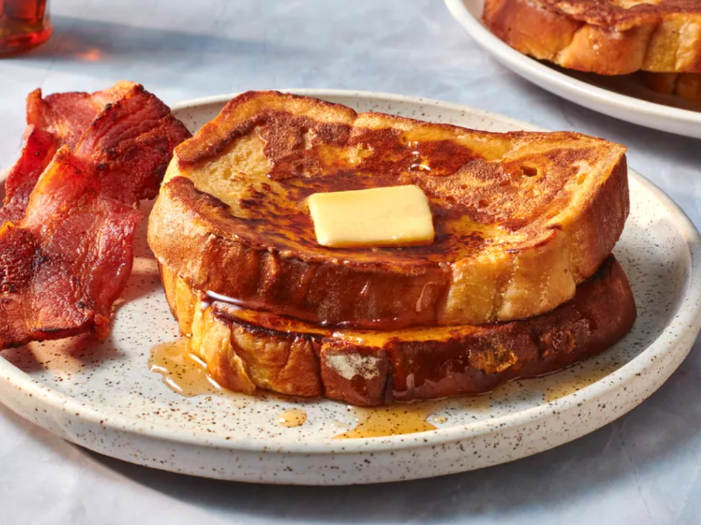

This recipe is originally from Allrecipes, including all the images.

What Makes French Toast Fluffy?
The secret ingredient in this fluffy French toast recipe: all-purpose flour! Flour binds the liquids together, which creates a more traditional “batter” and helps prevent soggy results.
This extra ingredient ensures the French toast is crispy on the outside, but soft and fluffy on the inside.
Ingredients
Note: The ingredients listed are for a serving size of 12.
¼ cup all-purpose flour
1 cups milk
3 large eggs
1 tablespoons white sugar
1 teaspoons vanilla extract
½ teaspoon ground cinnamon
1 pinches salt
12 thick slices bread
Steps
Gather all ingredients.
Measure flour into a large mixing bowl. Slowly whisk in milk. Whisk in eggs, sugar, vanilla extract, cinnamon, and salt until smooth.
Heat a lightly oiled griddle or frying pan over medium heat. Meanwhile, soak bread slices in milk mixture until saturated.
Working in batches, cook bread on the preheated griddle or pan until golden brown on each side.